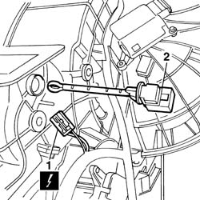

5010D18 top mixed air temperature sensor - r+r following electrical wiring check with heater case removed
- Path
- Procedures > 50 AUXILIARY UNITS > 5010 CLIMATE CONTROL - MISCELLANEOUS > 5010D air temperature recording system > 5010D18 top mixed air temperature sensor - r+r following electrical wiring check with heater case removed
- Kind
- repair procedure (removal / refitting; the operation number is the code)
- Applies to
- all engines; all production periods
- Interactive page
- https://sloeber94.github.io/elrnDB-fPnd/en/#/2752858
Applies to: all engines; all production periods
 Removing
Removing
 Refitting
Refitting1. Disconnect the electrical connection.
 | Name | Connector |
|---|---|---|
1 | Upper mixed air temperature sensor | K88 |
2. Release and remove the lower mixed air temperature sensor.

Applies to: all engines; all production periods
Refitting
RemovingPlace the lower mixed air temperature sensor in position and check that it is secure.
Connect the electrical connection.
| Name | Connector |
|---|---|---|
- | Upper mixed air temperature sensor | K88 |